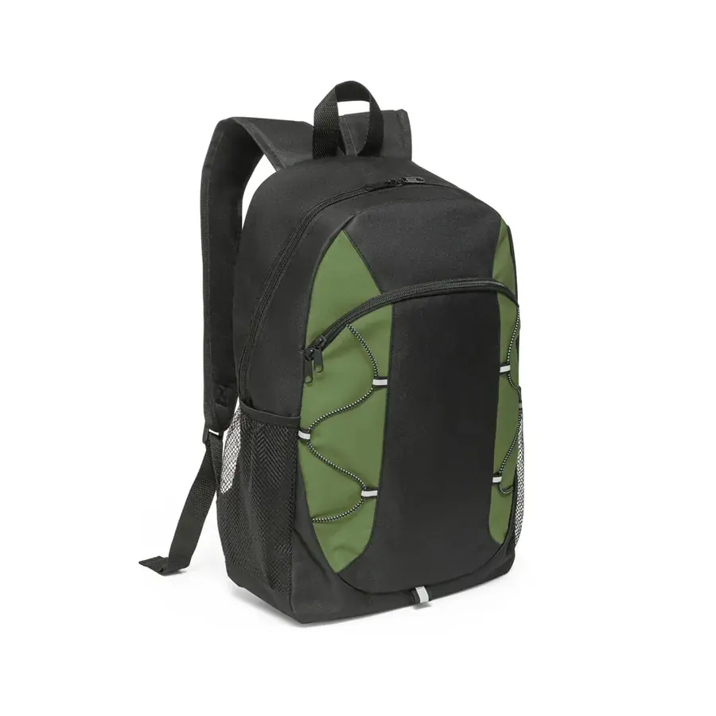

Um bom brinde de corrida é aquele que o atleta continua usando depois da prova, levando a marca do evento e dos patrocinadores para o treino da semana seguinte. O erro comum é escolher algo genérico que fica guardado. Aqui estão as peças que funcionam na nossa produção para provas de rua, e como escolher pelo orçamento e pelo prazo.
Um público grande e em mudança
A segunda edição da pesquisa Por Dentro do Corre, feita pela Olympikus com a consultoria Box1824, estimou cerca de 15 milhões de corredores no Brasil em 2025, ante 13 milhões em 2024. O levantamento também mostrou mulheres chegando a 50% dos corredores, a classe C a 43% e a idade média caindo de 37 para 34 anos (fonte 1).
Para quem organiza prova, isso tem efeito direto no brinde. Público mais jovem e mais diverso usa peças com cara de rua, como pochete e shoulder bag, além da tradicional sacochila. E muita gente nova no esporte ainda está montando o próprio equipamento, o que aumenta a chance de a peça do kit virar a bolsa de treino.
O que faz um brinde de corrida dar certo
- Utilidade: o corredor usa no treino ou no dia a dia;
- Área de marca: espaço para o logo do evento e dos patrocinadores;
- Custo em volume: prova de rua costuma ter centenas ou milhares de inscritos.
As 8 peças que mais funcionam
- 1. Sacochila (mochila-saco): a escolha mais comum para kit. Leve, dobra pequeno, guarda tênis e roupa usada. Área de estampa grande e bom custo em volume;
- 2. Pochete de corrida: leva celular, chave e documento junto ao corpo, e o corredor usa em todo treino;
- 3. Ecobag: organiza a retirada do kit e é reutilizada nas compras. Baixo custo e muita área de marca;
- 4. Porta-squeeze: combina com a hidratação e pode ser preso na mochila ou no cinto;
- 5. Necessaire esportiva: para acessórios, suplementos e itens de higiene pós-prova;
- 6. Bolsa térmica pequena: para provas com orçamento maior, leva água e lanche;
- 7. Shoulder bag: bolsa lateral de ombro, com pegada streetwear, para eventos com público mais jovem;
- 8. Bolsa de treino: para provas premium e brindes de patrocinadores e convidados.
Kit do corredor: a bolsa é a embalagem que fica
No kit, a bolsa cumpre duas funções. Primeiro organiza a retirada: camiseta, número de peito, chip e os brindes dos patrocinadores saem juntos, em uma peça só. Depois, é o item que continua em uso quando a camiseta vai para a gaveta.
Por isso a sacochila é a escolha mais frequente: comporta tudo, dobra pequeno e vai para o treino. Para provas com público maior e orçamento enxuto, a ecobag cumpre o mesmo papel com custo menor. Um detalhe prático: dimensione a peça pela camiseta dobrada e pelo maior item dos patrocinadores, para o kit fechar sem esforço na entrega.
Lembrancinha de corrida: quando vale a pena
Lembrancinha é a peça pequena, entregue na chegada ou como agradecimento. Funciona bem em corrida infantil, prova temática, corrida beneficente e eventos de empresa, em que a ideia é marcar a data mais do que equipar o atleta.
As que mais funcionam continuam úteis depois: porta-moedas com chaveiro, porta-documento, necessaire pequena e pochete slim. Todas têm área para o logo do evento e custo baixo em volume.
Brinde para participante, equipe e patrocinador
Nem todo mundo da prova precisa receber a mesma peça. Muitos organizadores separam três grupos:
- Participantes: sacochila ou ecobag, com o logo do evento em destaque;
- Equipe e voluntários: pochete ou shoulder bag, que identifica a equipe e deixa as mãos livres;
- Patrocinadores e convidados: bolsa de treino ou mochila com bordado, peça de maior valor percebido.
Produzir os três grupos no mesmo pedido costuma sair mais em conta do que fechar cada um separado, porque a arte e a preparação são aproveitadas.
Como escolher pelo orçamento
Defina primeiro o valor por participante. Com o teto por brinde e o número de inscritos, a escolha fica clara: volume alto com orçamento enxuto pede sacochila ou ecobag; kit premium comporta bolsa de treino ou necessaire. A calculadora de orçamento para brindes ajuda a chegar à faixa de produto certa para o orçamento total.
Como referência de um pedido real de 2026: ecobag em nylon com silk de duas cores, em lote de mil peças, ficou por volta de R$ 25 por peça. Em lotes menores o valor sobe, porque a preparação se divide por menos unidades.
Para justificar o investimento ao patrocinador, vale citar o estudo de impressões publicitárias da ASI de 2026, feito nos Estados Unidos: uma tote bag de US$ 6 gera cerca de 5 mil impressões ao longo da vida útil (fonte 3). É um dado de outro mercado, então use como indicação, não como promessa.
Prazo: a data da prova não muda
Trabalhe de trás para frente: data de retirada do kit, menos o frete, menos a produção (até 25 dias úteis após a aprovação), menos a peça-piloto (até 15 dias). Na prática, isso significa fechar arte e modelo cerca de dois meses antes da entrega do kit.
Se a prova busca reconhecimento oficial, o calendário de documentação também anda em paralelo. A CBAt define na Norma 07 os critérios para reconhecimento de corridas de rua e as distâncias oficiais (fonte 2). Alinhe o cronograma do brinde com o da organização para não atrasar a retirada do kit.
Personalização com evento e patrocinadores
Reserve a área frontal para o logo do evento e uma área secundária para os patrocinadores. O silk resolve a maioria dos casos; a sublimação permite arte colorida na peça inteira em tecido de poliéster. Veja o comparativo em bordado, silk ou sublimação. Para outras ações, conheça a linha de brindes corporativos personalizados.
Perguntas frequentes
Qual o melhor brinde para corrida de rua?
Os que o corredor reutiliza. A sacochila é a escolha mais comum por unir área de marca e bom custo em volume, seguida da pochete de corrida e da ecobag. Todas recebem o logo do evento e dos patrocinadores.
Qual a quantidade mínima de brindes para corrida?
Produzimos a partir de 20 unidades por modelo e cor. O preço por peça fica mais vantajoso em lotes de centenas ou milhares, o volume típico de uma prova de rua.
Com quanto tempo de antecedência preciso pedir o brinde para corrida?
Conte cerca de dois meses antes da retirada do kit: até 15 dias para a peça-piloto, até 25 dias úteis de produção após a aprovação e o prazo do frete.
Qual a diferença entre kit do corredor e lembrancinha?
O kit é o que o atleta retira antes da prova, com camiseta, número de peito e chip, geralmente dentro de uma sacochila ou ecobag. A lembrancinha é uma peça menor, entregue na chegada ou como agradecimento.
Dá para colocar o logo dos patrocinadores no brinde?
Sim. O logo do evento costuma ir em destaque na frente e os patrocinadores em uma área secundária. Em silk, cada cor da arte é uma passada a mais, então concentrar os patrocinadores em uma cor reduz o custo.
Qual o brinde mais barato para corrida de rua?
A ecobag e a sacochila têm o menor custo em volume. Como referência de 2026, ecobag em nylon com silk de duas cores, em lote de mil peças, ficou por volta de R$ 25 por peça.
Fontes
- Pesquisa da Olympikus aponta mais mulheres, jovens e classe C na corrida de rua, Propmark, 2026.
- Norma 07: Reconhecimento de Corridas de Rua e Ultramaratona, Confederação Brasileira de Atletismo (CBAt), 2023.
- ASI’s 2026 Ad Impressions Study: 5 Compelling Takeaways, ASI (Advertising Specialty Institute), 2026.
Pronto para produzir com a LS Confecções?
Fabricação B2B de bolsas, mochilas e acessórios personalizados a partir de 20 unidades, em São Paulo. Fale direto com nosso comercial e receba uma proposta em minutos.
Solicitar orçamento